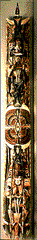
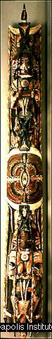
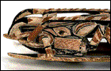

<!--This file created 10/16/97 5:56 PM by Claris Home Page version 2.0-->
<HTML>
<HEAD>
   <TITLE>Mpls Inst Arts - World Mythology: Malagan Pole</TITLE>
   <META NAME="GENERATOR" CONTENT="Claris Home Page 2.0">
   <X-SAS-WINDOW TOP="114" BOTTOM="480" LEFT="16" RIGHT="546">
<HEAD>
</HEAD>
<BODY TEXT="#111111" LINK="#660000" ALINK="#AA0000" VLINK="#444444" BACKGROUND="backgroundbrown.gif">

<P><FONT SIZE="+2">Curriculum Materials: World Mythology</FONT>
<HR>
<TABLE BORDER="3">
   <TR>
      <TD>
         <P><CENTER><A HREF="introduction.html#top">Introduction</A>
         ~ <A HREF="mythbyimage.html#top">Myth by Image</A> ~
         <A HREF="culturelist.html#top">Myth by Culture</A> ~
         <A HREF="myths.html#top">Mythological Comparisons</A> ~
         <A HREF="glossary.html#top">Glossary</A> ~
         <A HREF="suggestedreading.html#top">Suggested Readings</A> ~
         <A HREF="downloadables.html#top">Downloadable Resources</A>
         ~ <A HREF="../tta/classroom_materials_order.html">How to Order</A> ~
         <A HREF="myth_evaluation.html#top">Your Comments Wanted</A>
         ~ <A HREF="#Story">Story</A> ~
         <A HREF="#Background">Background</A> ~
         <A HREF="#Questions">Questions</A></CENTER>
      </TD></TR>
</TABLE>
<HR>
<A NAME="top"></A>&nbsp;<TABLE BORDER="0" CELLSPACING="10" WIDTH="445">
   <TR>
      <TD>
         <P><A HREF="full_jpg/20.jpg"></A><BR>
         
         <B>Image 20</B><BR>
         
         <FONT SIZE="+2">Malagan Pole</FONT><BR>
         
         Papua New Guinea (New Ireland)<BR>
         
         19th century<BR>
         
         Polychrome wood<BR>
         
         101 inches high<BR>
         
         Gift of the Morse Foundation 68.9.3<BR>
         
         
         <HR>
         <A NAME="Key"></A></P>
         
         <P><CENTER><B>Key Ideas</B></CENTER></P>
         
         <UL>
            <LI>The story of an old woman named Tsenabonpil
            (sane-ah-BONE-pill) and a monstrous pig explains the
            traditional social organization of the people of New
            Ireland.
            
            <LI>The importance of the natural world to the people of
            New Ireland is evident in their traditional malagan
            (MAH-la-gan) festival, mythology, and art.
            
            <LI>The composition, colors, and subject of this pole are
            all characteristic of northern New Ireland sculptures
            called malagan.
         </UL>
         
         <P><BR CLEAR="left">
         
         
         <HR>
         <A NAME="Story"></A></P>
         
         <P><CENTER><B>Story</B></CENTER></P>
         
         <P>The people of Lesu (LES-sue) fled their New Ireland homes
         to a nearby island to escape a frightening monstrous pig
         named Luana (loo-AH-na). Luana ate people. The people left
         behind the old woman Tsenabonpil, fearing that her severely
         swollen leg would sink their boat.</P>
         
         <P>Tsenabonbil gave birth to twin boys, Daror (DAH-roar) and
         Damuramurari (dah-moo-rah-moo-RAH-ree). When they were
         older, Tsenabonpil told the boys they must kill the evil
         pig, Luana. After many adventures they managed to capture
         and kill the pig. Tsenabonpil then attached some of the
         pig's hair to a coconut and floated it out to the exiled
         Lesu people to let them know that Luana was dead.</P>
         
         <P>When the Lesu people returned in their canoes,
         Tsenabonpil assigned them their social structure. She
         designated the two marriage classes - the Eagle and the Hawk
         - and gave names to the many clans. She gave the Lesu
         knowledge of magic, medicine, and crafts. When Tsenabonpil
         was done, she and her sons disappeared forever.
         <HR>
         <A NAME="Background"></A></P>
         
         <P><CENTER><B>Background</B></CENTER></P>
         
         <P><B>New Ireland</B><BR>
         
         New Ireland is a province of Papua New Guinea (pop-poo-ah
         noo GI-nee) and the second largest island in northwest
         Melanesia. It forms part of the Bismarck Archipelago.
         Tropical rainforests cover much of the island, and a wide
         variety of birds, reptiles, and sea animals live there.
         Mammals are scarce, except for marsupials, pigs, and dogs.
         The importance of the natural world to the people of New
         Ireland is evident in their traditional social structure,
         mythology, festivals, and art.</P>
         
         <P><B>Malagan</B><BR>
         
         One of the central events in the social, economic, and
         aesthetic life of New Ireland communities is the malagan, a
         festival held in honor of deceased clan members. The
         elaborate funeral rites and festivities commemorate
         ancestors as well as help the souls of the dead depart the
         world of the living and acclimate to the world of the dead.
         The malagan festival, which may be held several months, or
         even years, after a person's death, brings together large
         social groups and provides an opportunity for the moiety and
         clan to express solidarity.</P>
         
         <P>Elaborately carved sculptures are important aspects of
         the malagan festival. On the northern coast of New Ireland a
         clan member commissions a carver to make special sculptures
         to be revealed during festival performances. Depending on
         the number ordered, a single commission may take several
         months to complete. The ritual process of producing malagan
         sculptures is complex and time-consuming; it is as much a
         part of the festivities as the performance itself. After the
         sculptures are carved and dried, they are placed in an
         enclosure built in or near the cemetery. Sea-snail shells
         are placed into the eye sockets of the figures. Only then
         can the sculptures be painted.</P>
         
         <P>The dramatic unveiling of the malagan figures at the end
         of the festivities is accompanied by generous feasts and
         dances at which the spirits of the dead are believed to be
         present. The sculptures serve little or no practical
         function after a festival and are often left to rot.</P>
         
         <P><B>Malagan Pole</B><BR>
         
         Standing more than eight feet tall, this malagan pole is
         made up of many intricately intertwined animals and humans.
         At the top, a man crouches on a frigate bird, and at the
         bottom, a woman stands on the head of a wild pig. In the
         middle of the pole is a complex
         <A HREF="glossary.html#GEOMETRIC">GEOMETRIC</A> design,
         called a mataling (MAH-ta-ling), or "eye of fire." At its
         center is an eye <A HREF="glossary.html#INLAY">INLAID</A>
         with snail shell. A pair of dark, elegantly decorated
         frigate birds face the "eye of fire." The lengthy tail
         feathers of the upper bird are held by the man and blend
         into the feathers of another bird at the very top of the
         pole. The lower bird's tail, held by the woman, hangs in
         front of the pig at the bottom of the pole.</P>
         
         <P>White, orange-red, and black pigments are the main colors
         of this pole, and traces of a bright yellow pigment are
         visible around the central design. When this pole was made,
         most pigments were still made from natural materials: white
         from lime powder, red from red ocher, black from charcoal
         ashes or burned nuts, and yellow from vegetable matter.</P>
         
         <P>The designs on the wild pig's head (see
         details) show the northern New Ireland painters' preference
         for breaking down large surface areas into small,
         decorative, patterned parts. The boar's ears, eyelids, and
         long snout are all striped. Around its large white tusks are
         many small teeth, indicated by orange-red lines.</P>
         
         <P><BR>
         
         <B>Meaning</B><BR>
         
         The human figures on the malagan probably refer to
         ancestors, and the birds to air; together they allude to the
         interrelatedness of all things. Because each malagan
         commemorates a specific individual in a particular ceremony,
         its meaning is known only to those present at that ceremony.
         The same image may mean something different to everybody.
         For example, to one person the pig at the bottom might stand
         for the community's source of food and to another it might
         recall the mythic story of the monstrous pig
         Luana.<BR CLEAR="left">
         
         
         <HR>
         </P>
         
         <P><CENTER><B><A NAME="Questions"></A>Discussion
         Questions</B></CENTER></P>
         
         <P><B>Look</B><BR>
         
         <B>1.</B> <B>Tell the story of Tsenabonpil. </B>The story of
         Tsenabonpil came from the people of New Ireland, the same
         people who made this <I>malagan</I> pole. Find a wild pig on
         the malagan pole. <B>(Head of a pig on the bottom of the
         pole.)</B> Find a woman. <B>(Crouching on top of the
         pig.)</B> How do you know it's a woman? <B>(Prominent
         breasts.)</B> Find three birds on the pole. <B>(Pair of
         birds on either side of the center and one at the top.)</B>
         Find a man. <B>(Between the two birds on the top half of the
         pole.)</B> There is a
         <A HREF="glossary.html#GEOMETRIC">GEOMETRIC</A> design on
         the pole that New Ireland people call a <I>mataling</I>, or
         "eye of fire." Can you guess where it is? <B>(Exact
         center.)</B></P>
         
         <P><B>2.</B> When this pole was made, artists painted it
         with natural pigments. What colors do you see painted on the
         pole? <B>(Red, black, and white.)</B> Where do you see
         colors other than red, black, and white? What color are the
         eyes of the two human figures and the eye at the center of
         the pole? Are these colors painted? How can you tell?
         <B>Explain that eyes are
         <A HREF="glossary.html#INLAY">INLAID</A> sea-snail
         shells.</B></P>
         
         <P><B>3.</B> The New Ireland artists who carved and painted
         this pole divided large surface areas into decoratively
         <A HREF="glossary.html#PATTERN">PATTERNED</A> parts. <B>Show
         detail of image 20, side view of pig. </B>Where do you see
         patterned parts on the pig's head? <B>(Separate color and
         pattern around the eye, mouth, teeth, ear; crescent shape
         between the eye and mouth; red-and-white stripe along the
         top of the head; rectangle below eye and ear.)</B></P>
         
         <P><B>4.</B> <A HREF="glossary.html#POSITIVE">POSITIVE
         SHAPES</A> occupy space, just like you do. The spaces around
         positive shapes are called
         <A HREF="glossary.html#NEGATIVE">NEGATIVE SHAPES</A>.
         <B>Show detail of image 20.</B> Where are the negative
         shapes in this part of the malagan pole? <B>(Negative shapes
         exist all around the female figure on the bottom of the
         pole, as well as in front of the figure created by the
         extended bird tail. Accept a variety of answers as all of
         these areas may be difficult to see in any one detail
         image.)</B></P>
         
         <P>Do the negative shapes make this sculpture appear sturdy
         or delicate? <B>(Many small negative shapes create a feeling
         of lightness and delicacy.)</B> What else has the artist
         done to make this huge sculpture look delicate? <B>(Small
         geometric designs painted all over the sculpture contribute
         to its delicate appearance.)</B></P>
         
         <P>
         <HR>
         <B>Think</B><BR>
         
         <B>1.</B> Malagan festivals, like the one for which this
         malagan pole was made, are ways for New Ireland communities
         to commemorate someone who has died. Funeral rites and
         festivities help souls depart the world of the living and
         acclimate to the world of the dead. How do we honor and
         commemorate our ancestors? What kinds of ceremonies do we
         have when people in our communities die?</P>
         
         <P><B>2.</B> Malagan sculptures may take months to carve.
         The malagan festival culminates in the unveiling of malagan
         sculptures. After the festival is over, the sculptures are
         often left to rot. Why do you think the people of New
         Ireland leave the sculptures to rot after the malagan
         festival? <B>(Once the festival for which they were created
         is over, the sculptures are no longer of any use to the
         community.)</B></P>
         
         <P><B>3.</B> Malagan sculptures are hidden until the final
         day of the malagan ceremony. When they are unveiled, guests
         make a token gift to gain admission to the display. Where do
         we keep our art objects? <B>(Museums, galleries.)</B> What
         do we call an unveiling of art objects at a special
         exhibition? <B>(An opening.)</B> Do guests ever make a
         "token gift" to gain admission to these places? <B>(Some
         museums charge admission fees or suggest donations.)</B>
         </P>
         
         <P><B>4.</B> New Ireland artists employ the technique of
         <A HREF="glossary.html#ASSEMBLAGE">ASSEMBLAGE</A>. What does
         that word mean? <B>(A form of art involving the assembly and
         arrangement of unrelated objects, parts, and materials in a
         kind of sculptural collage.)</B> Could you have an
         assemblage of people? How is a malagan festival an
         assemblage? <B>(A malagan festival brings together large
         social groups and provides an opportunity to reestablish
         bonds between neighbors and friends.)</B> Can you think of
         an example of an assemblage of ideas?</P>
         
         <P></UL>
         <HR>
      
      </TD></TR>
</TABLE> <TABLE BORDER="3">
   <TR>
      <TD>
         <P><CENTER><A HREF="introduction.html#top">Introduction</A>
         ~ <A HREF="mythbyimage.html#top">Myth by Image</A> ~
         <A HREF="culturelist.html#top">Myth by Culture</A> ~
         <A HREF="myths.html#top">Mythological Comparisons</A> ~
         <A HREF="glossary.html#top">Glossary</A> ~
         <A HREF="suggestedreading.html#top">Suggested Readings</A> ~
         <A HREF="downloadables.html#top">Downloadable Resources</A>
         ~ <A HREF="../tta/classroom_materials_order.html">How to Order</A> ~
         <A HREF="myth_evaluation.html#top">Your Comments Wanted</A>
         ~ <A HREF="#Story">Story</A> ~
         <A HREF="#Background">Background</A> ~
         <A HREF="#Questions">Questions</A></CENTER>
      </TD></TR>
</TABLE></P>
</BODY>
</HTML>
